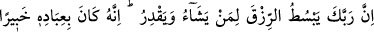
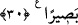

Çünkü bu iki yol arasında o kadar
Fark vardır ki güneşten ta sühâ yıldızına kadar
İmdi bütün işlerde orta yolu tutmak
Şu delil ile ki ‘İşlerin hayırlısı orta olanıdır’ buyrulmuştur
el-Kevâşî’de der ki: “Doğrusu âyetteki bu hitap Hz. Peygamber (s.a.)’edir, kasdedilen
ise başkasıdır. Çünkü Hz. Peygamber (a.s.) insanların gönlü en geniş olanıdır. O yarın
için hiçbir şey biriktirmezdi.”
Kâşifî der ki: “Esbâb-ı Nüzûl’de rivâyet edilir ki müslüman bir hanımla yahudi bir
kadın bahse tutuştular. Bahis konusu Hz. Risâletpenâh Efendimiz’in Mûsâ Kelîm
(a.s.)’dan daha cömert olduğu idi. Mûsâ (a.s.)’ın cömertliği, isteyeni reddetmemesiydi.
Ya ona bir şey ikram eder ya da hoş söz söyleyerek onu memnun ederdi. O yahudi kadın
sınamak için kızını Peygamber Efendimiz’e gönderdi. Kızcağız geldi ve: “Ey Allah’ın
Rasûlü, annem sizden bir gömlek taleb ediyor.” dedi. Hz. Peygamber ona bir süre sonra
gelmesini emir buyurdu. Bir zaman sonra kızcağız: “Annem sizin üzerinizdeki gömleği
istiyor.” diyerek geri geldi. Hz. Peygamber (a.s.) hücresine vardı, gömleği çıkardı, kıza
verdi ve kendisi gömleksiz oturdu. Bilal (r.a.) kamet getirdi. Ashab Peygamber
Efendimiz’in çıkmasını bekliyordu. Peygamberimiz ise gömleği olmadığı için dışarı
çıkamadı. İşte bunun üzerine bu âyet nâzil oldu.”
Burhânu’l-Kur’ân’da der ki: “Namaz vakti geldiği halde Hz. Peygamber elbisesi
olmadığı için hayasından dolayı namaz için mescide çıkmadı. Bunun üzerine sahabe Hz.
Peygamber’in yanına vardılar. Rasûlullah’ı bu hal üzere görünce onu kınadılar. Bunun
üzerine “Kınanır ve açık kalırsın” âyeti nazil oldu. Buradaki ‘mahsûran’ açık, çıplak
demektir. Âyetin tefsiri ile ilgili en âşikâr olan da budur.”
Fakîr (Bursevî) der ki: Bu böyledir. Çünkü ashâbı Hz. Peygamber (s.a.)’i kınadıkları
için kınanmış oldu ve çıplak, üstü açık ve elbisesiz ortada kaldı. Çünkü ‘el-hasr’
kelimesi keşf, yâni açmak, meydana çıkarmak anlamındadır. Buna göre âyetteki “ fetak‘ude = oturur kalırsın” ifâdesi ile gerçek anlamda oturmanın kasdedilmiş olması
daha uygundur. el-İrşâd müellifi ise bu rivâyeti uygun bulmamıştır. Çünkü bu sûre
Mekkî bir sûredir. Anlatılan kıssa ise Medine’de olmuştur. İşin doğrusunu Allah bilir!
30. Rabbin rızkı dilediğine bol verir, dilediğine daraltır. Şüphesiz ki O, kullarından
haberdardır, (onları) çok iyi görür.
“Rabbin rızkı dilediğine bol verir, dilediğine daraltır.” Allah, hikmetine bağlı olan
dilemesiyle dilediği kimselere rızkı bol bol verir, bazılarına da azaltır. Bu genişletme